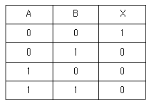
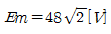
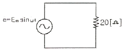
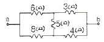
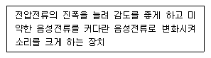
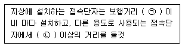
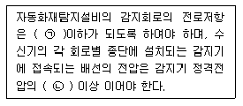

소방설비산업기사(전기) (2008-05-11 기출문제)
1과목: 소방원론
1. 다음 중 연소의 3요소라고 할 수 있는 것은?
- 공기, 연료, 바람
- 연료, 산소, 열
- 마찰, 수분, 열
- 열, 산소, 공기
(정답률: 79%)

2. 가연물질의 조건으로 옳지 않은 것은?
- 산화되기 쉬워야 한다.
- 연소반응을 일으키는 활성화에너지가 커야 한다.
- 열의축적이 용이하여야 한다.
- 산소와의 친화력이 커야 한다.
(정답률: 86%)
3. 칼륨과 같은 금속분말 화재시 주수소화가 부적당한 가장 큰 이유는?
- 수소가 발생되기 때문
- 유독가스가 발생되기 때문
- 산소가 발생되기 때문
- 금속이 부식되기 때문
(정답률: 76%)
4. 위험물안전관리법상 제1류 위험물의 성질을 옳게 나타낸 것은?
- 가연성 고체
- 산화성고체
- 인화성 액체
- 자연발화성 물질
(정답률: 91%)
5. 다음 중 유도등의 종류가 아닌 것은?
- 객석유도등
- 무대유도등
- 피난구유도등
- 통로유도등
(정답률: 83%)
6. 자연발화를 방지하는 방법으로 틀린 것은?
- 습도가 높은 곳을 피한다.
- 저장실의 온도를 높인다.
- 통풍을 잘 시킨다.
- 열이 쌓이지 않게 퇴적방법에 주의한다.
(정답률: 87%)
7. 화재로 인하여 산소가 부족한 건물 내에 산소가 새로 유입된 때에는 고열가스의 폭발 또는 급속한 연소가 발생하는데 이 현상을 무엇이라고 하는가?
- 후래쉬 오버(Flash over)
- 보일 오버(Bil over)
- 백 드래프트(Back draft)
- 백 화이어(Back fire)
(정답률: 81%)
8. 연소범위에 대한 다음 설명 중 틀린 것은?
- 연소범위에는 상한값과 하한값이 있다.
- 온도가 올라가면 연소범위는 넓어진다.
- 연소범위가 좁을수록 폭발의 위험이 크다.
- 염소범위는 압력의 영향을 받는다.
(정답률: 78%)
9. 정전기 화재사고의 예방대책으로 옳지 않은 것은?
- 제전기를 설치한다.
- 공기를 되도록 건조하게 유지시킨다.
- 접지를 한다.
- 공기를 이온화한다.
(정답률: 87%)
10. 고체의 일반적인 연소 형태에 해당하지 않는 것은?
- 표면온도
- 분해연소
- 증발연소
- 확산연소
(정답률: 68%)
11. 건축물의 주요 구조부에 해당하는 것은?
- 작은 보
- 옥외계단
- 지붕틀
- 최하층 바닥
(정답률: 66%)
12. 다음 중 자체에 산소를 포함하고 있어서 자기연소가 가능한 물질은?
- 니트로글리세린
- 금속칼륨
- 금속나트륨
- 황린
(정답률: 74%)
13. 제3류 위험물인 나트륨 화재시의 소화방법으로 가장 적합한 것은?
- 이산화탄소 소화약제를 분사한다.
- 건조사를 뿌린다.
- 하론 1301을 분사한다.
- 물을 뿌린다.
(정답률: 79%)
14. 다음 중 증기압의 단위가 아닌 것은?
- mmHg
- kPa
- N/cm2
- cal/℃
(정답률: 68%)
15. 다음 중 소화의 원리에서 소화형태로 볼 수 없는 것은?
- 발열소화
- 질식소화
- 희석소화
- 제거소화
(정답률: 83%)
16. CO2 소화기가 갖는 주된 소화 효과는?
- 냉각소화
- 질식소화
- 연료제거소화
- 연쇄반응차단소화
(정답률: 88%)
17. 화재의 분류에서 다음 중 A급 화재에 속하는 것은?
- 유류
- 목재
- 전기
- 가스
(정답률: 90%)
18. 제3종 분말소화약제의 주성분은?
- 탄산수소나트륨
- 제1인산암모늄
- 탄산수소칼륨
- 탄산수소칼륨과 요소
(정답률: 85%)
19. 질소가 가연물이 될 수 없는 이유를 가장 옳게 설명한 것은?
- 흡열 반응을 하기 때문에
- 연소시 화염이 없기 때문에
- 산소와 반응성이 대단히 작기 때문에
- 발열 반응을 하기 때문에
(정답률: 79%)
20. 화재시 발생할 수 있는 유해한 가스로 혈액 중의 산소 운반 물질인 헤모글로빈과 결합하여 헤모글로빈에 의한 산소 운반을 방해하는 작용을 하는 것은?
- CO
- CO2
- H2
- H2O
(정답률: 91%)
2과목: 소방전기회로
21. 도통상태에 있는 SCR을 차단상태로 하기 위한 가장 올바른 방법은?
- 전압의 극성을 바꾸어 준다.
- 양극전압을 더 높게 한다.
- 게이트 역방향 바이어스를 인가시킨다.
- 게이트 전류를 차단시킨다.
(정답률: 52%)
22. 다음 중 피드백 제어장치에 속하지 않는 요소는?
- 조작부
- 경출부
- 조절부
- 전달부
(정답률: 41%)
23. 계전기 접점의 불꽃을 소거할 목적으로 사용되는 반도체소자는?
- 바리스터
- 서미스터
- 바랙터 다이오드
- 터널 다이오드
(정답률: 72%)
24. 측정계기를 구성하는 주요 3대 구성요소에 포함되지 않는 것은?
- 가열 장치
- 구동 장치
- 제어 장치
- 제동 장치
(정답률: 81%)
25. 인버터(inverter)에 대한 설명으로 옳은 것은?
- 교류를 직류로 변환시켜 준다.
- 직류를 교류로 변환시켜 준다.
- 저전압을 고전압으로 높이기 위한 장치이다.
- 교류의 주파수를 낮추어 주기 위한 장치이다.
(정답률: 72%)
26. 회로시험기(Tester)로 직접 측정할 수 없는 것은?
- 직류전류
- 역률
- 교류전압
- 저항
(정답률: 75%)
27. 정전압 다이오드라고 하며 항복전압 이상으로 전압을 점점 증가시켜도 다이오드에 걸리는 전압은 더 이상 증가하지 않고 일정한 상태를 유지되는 성질을 이용하여 기기를 보호하기 위해 만든 다이오드는?
- 터널다이오드
- 제너다이오드
- 포토다이오드
- 발광다이오드
(정답률: 88%)
28. 0.5H인 코일의 리액턴스가 753.6Ω일 때 주파수는 약 몇 [Hz] 인가?
- 60Hz
- 120Hz
- 240Hz
- 360Hz
(정답률: 50%)
29. 다음 진리표의 논리회로는? (단, A와 B는 입력이고 X는 출력 이다.)

- AND
- OR
- NOT
- NOR
(정답률: 64%)
30. 그림과 같은 회로에서 전류의 실효치는 몇 [A] 인가? (단,

이다.)
- 3.4A
- 2.4A
- 1.7A
- 1.1A
(정답률: 66%)
31. 800W의 전력을 소비하는 회로가 있다. 이 회로에 정격 전압의 60% 전압을 가한다면 소비 전력은 몇 [W] 가 되겠는가?
- 288W
- 368W
- 646W
- 1336W
(정답률: 48%)
32. 4Ω의 저항을 가진 100mA의 전류계에 2Ω의 분류기를 접속한 경우 최대 몇 [mA]까지 측정이 가능한가?
- 200mA
- 300mA
- 400mA
- 600mA
(정답률: 50%)
33. 지름 3mm, 길이 2km인 어떤 도체의 저항이 32Ω 이다. 이것을 지름 6mm, 길이 500m로 바꾸게 되면 저항은 몇 [Ω]이 되겠는가?
- 1Ω
- 2Ω
- 3Ω
- 4Ω
(정답률: 35%)
34. 자계 중에서 도체가 운동할 때 도체에 유기되는 기전력의 방향을 결정하는 법칙은?
- 플레밍의 왼손법칙
- 플레밍의 오른손법칙
- 패러데이의 법칙
- 암페어의 오른나사법칙
(정답률: 60%)
35. 전압변동률이 10%인 정류회로에서 무부하시 전압이 5V일 때 부하시 전압은 약 몇 [V]인가?
- 3.23V
- 4.54V
- 5.23V
- 5.74V
(정답률: 54%)
36. 디지털제어의 이점이 아닌 것은?
- 감도의 개선
- 드리프트(drift)의 제거
- 잡음 및 외란의 영향의 감소
- 프로그램의 단일성
(정답률: 73%)
37. 그림과 같은 회로에서 a, b간의 합성저항은 약 몇 [Ω]인가?

- 0.19Ω
- 1.28Ω
- 2.57Ω
- 5.14Ω
(정답률: 52%)
38. 목표값이 시간에 관계없이 일정한 제어는?
- 정치제어
- 추종제어
- 비율제어
- 프로그래밍제어
(정답률: 82%)
39. 전압 200V, 주파수 60Hz, 4극 10HP인 3상 유도전동기의 동기속도는 몇 [rpm] 인가? (단, 이 때 전동기의 역률은 0.85 라고 한다.)
- 1200rpm
- 1800rpm
- 2400rpm
- 3600rpm
(정답률: 70%)
40. 어떤 회로에서 유효전력 80W, 무효전력 60Var일 때 역률은 몇 [%] 인가?
- 100%
- 90%
- 80%
- 60%
(정답률: 72%)
3과목: 소방관계법규
41. 다음 중 소방시설업에 포함되지 않는 영업은?
- 소방시설공사업
- 소방시설설계업
- 소방시설관리업
- 소방시설감리업
(정답률: 64%)
42. 다음 중 화재경계지구의 지정 등에 관한 설명으로 적절하지 않은 것은?
- 화재경계지구는 소방본부장 또는 소방서장이 지정한다.
- 화재가 발생우려가 높거나 화재가 발생하는 경우 그로 인하여 피해가 클 것으로 예산되는 지역을 지정한다.
- 소방본부장은 화재의 예방과 경계를 위하여 필요하다고 인정하는 때에는 관계인에 대하여 소방용수시설 또는 소화기구의 설치를 명할 수 있다.
- 소방서장은 화재경계지구안의 관계인에 대하여 소방상 필요한 훈련 및 교육을 실시할 수 있다.
(정답률: 64%)
43. 다음 중 소방기본법상 소방체험관을 설립하여 운영할 수 있는 자로 알맞은 것은?
- 문화체육관관부장관
- 소방방재청장
- 시ㆍ도지사
- 소방본부장
(정답률: 82%)
44. 소방용수시설인 저수조의 설치기준으로서 알맞은 것은?
- 지면으로부터의 낙차가 4.5m 이하일 것
- 흡수부분의 수심이 0.5m 이하일 것
- 흡수관의 투입구가 사각형의 경우에는 한 변의 길이가 60cm 이하일 것
- 저수조에 물을 공급하는 방법은 상수도에 연결하여 수동으로 급수되는 구조일 것
(정답률: 55%)
45. 다음 중 피난층에 대한 설명으로 가장 알맞은 것은?
- 건축물의 1층
- 건축물의 옥상
- 옥상으로 직접 피난할 수 있는 층
- 곧바로 지상으로 갈 수 있는 출입구가 있는 층
(정답률: 81%)
46. 다음 중 화재예방ㆍ소방활동 또는 소방훈련을 위하여 사용되는 소방신호에 포함되지 않는 것은?
- 경계신호
- 발화신호
- 대피신호
- 해제신호
(정답률: 62%)
47. 단독경보형감지기의 설치대상으로 옳지 않은 것은?
- 연면적 1000m2 미만의 아파트
- 연면적 500m2 미만의 숙박시설
- 연면적 2000m2 미만의 교육연구시설 내에 있는 기숙사
- 연면적 1000m2 미만의 기숙사
(정답률: 64%)
48. 다음 소방시설 중 소화설비에 포함되지 않는 것은?
- 연결살수설비
- 자동확산소화용구
- 옥외소화전설비
- 옥내소화전설비
(정답률: 55%)
49. 형식승인을 얻지 아니한 소방용기계ㆍ기구를 소방시설공사에 사용한 때의 벌칙으로 알맞은 것은?(관련 규정 개정전 문제로 여기서는 기존 정답인 3번을 누르면 정답 처리됩니다. 자세한 내용은 해설을 참고하세요.)
- 10년 이하의 징역 또는 10000만원 이하의 벌금
- 5년 이하의 징역 또는 5000만원 이하의 벌금
- 3년 이하의 징역 또는 1500만원 이하의 벌금
- 2년 이하의 징역 또는 1000만원 이하의 벌금
(정답률: 68%)
50. 다음 소방시설 중 하자보수보증기간이 2년이 아닌 것은?(관련규정 개정전 문제로 여기서는 기존 정답인 3번을 누르면 정답 처리 됩니다. 바뀐 규정 및 자세한 내용은 해설을 참고하세요.)
- 유도등
- 피난기구
- 무선통신보조설비
- 자동식소화기
(정답률: 52%)
51. 일반음식점에서 조리를 위해 불을 사용하는 설비를 설치할 때 지켜야 할 사항으로 적절하지 않은 것은?
- 주방시설에는 동물 또는 식물의 기름을 제거할 수 있는 필터 등을 설치할 것
- 열을 발생하는 조리기구는 반자 또는 선반에서 50cm 이상 떨어지게 할 것
- 주방설비에 부속된 배기닥트는 0.5mm 이상의 아연도금 강판ㆍ이와 동등 이상의 내식성 불연재료로 설치할 것
- 열을 발생하는 조리기구로부토 15cm 이내의 거리에 있는 가연성 주요구조부는 석면판 또는 단열성이 있는 불연재료로 덮어 씌울 것
(정답률: 47%)
52. 다음 중 방염성능이 있어야 할 물품에 속하지 않는 것은?
- 창문에 설치하는 커텐류(브라인드를 포함한다.)
- 무대용 합판 또는 섬유관
- 전시용 합판 또는 섬유관
- 냉장고
(정답률: 81%)
53. 다음 중 위험물제조소의 변경허가를 받아야 하는 경우가 아닌 것은?
- 제조소의 위치를 이전하는 경우
- 안전장치를 신설하는 경우
- 지정수량의 배수를 변경하는 경우
- 위험물취급탱크의 탱크전용실을 증설하는 경우
(정답률: 31%)
54. 소방기본법상 소방용수시설에 포함되지 않는 것은?
- 소화전
- 급수탑
- 저수조
- 전용수조
(정답률: 68%)
55. 특수가연물의 품명과 수량기준이 바르게 짝지어진 것은?
- 면화류 - 200kg 이상
- 대팻밥 - 300kg 이상
- 가연성고체류 - 1000kg 이상
- 발포시킨 합성수지류 - 10m3 이상
(정답률: 70%)
56. 자동화재탐지설비를 설치하여야 하는 건축물의 기준으로 옳지 않은 것은?
- 연면적 600m2 이상인 숙박시설
- 연면적 1000m2 이상인 공동주택
- 연면적 2000m2 이상인 동식물관련시설
- 연면적 1500m2 이상인 교육연구시설
(정답률: 39%)
57. 특정소방대상물의 관계인이 작동기능점검을 실시한 때 그 점검결과의 처리방법으로 가장 알맞은 것은?
- 30일 이내 소방본부장에게 제출한다.
- 30일 이내 소방서장에게 제출한다.
- 1년 이내 시ㆍ도지사에게 제출한다.
- 2년간 자체보관 한다.
(정답률: 59%)
58. 전문소방시설공사업이 등록을 하고자 할 때 법인의 자본금의 기준은?
- 5천만원 이상
- 1억원 이상
- 2억원 이상
- 3억원 이상
(정답률: 80%)
59. 다음 중 대통령령 또는 화재안전기준의 변경으로 그 기준이 강화된 경우 기존 특정소방대사울에 대하여 강화된 기준을 적용할 수 있는 소방시설의 종류로 알맞은 것은?
- 옥내소화전설비
- 스프링클러설비
- 물분무등소화설비
- 자동화재속보설비
(정답률: 55%)
60. 다음 중 화재 또는 구조ㆍ구급이 필요한 상황을 허위로 알린 자에게 부과하는 과태료액의 기준으로 알맞은 것은?
- 50만원
- 100만원
- 150만원
- 200만원
(정답률: 32%)
4과목: 소방전기시설의 구조 및 원리
61. 자동화재탐지설비와 연동으로 작동하여 자동적으로 화재 발생 상황을 소방관서에 전달하는 것은?
- 무선통신보조설비
- 연소방시설비
- 자동화재속보설비
- 비상방송설비
(정답률: 80%)
62. 다음 중 경계전로의 누설전류를 자동적으로 검출하여 이를 누전경보기의 수신부에 송신하는 것은?
- 발신기
- 변류기
- 중계기
- 검출기
(정답률: 66%)
63. 복도통로유도등의 설치기준으로 올바르지 않은 것은?
- 복도에 설치할 것
- 구부러진 모퉁이 및 보행거리 25m 마다 설치할 것
- 바닥으로부터 높이 1m 이하의 위치에 설치할 것
- 바닥에 설치하는 경우 하중에 따라 파괴되지 아니하는 강도의 것으로 할 것
(정답률: 61%)
64. 다음 중 자동화재탐지설비의 중계기 설치기준으로 옳지 않은 것은?
- 수신기에 따라 감시되지 아니하는 배선을 통하여 전력을 공급받는 것에 있어서는 당해 전원의 정전이 즉시 수신기에 표시되는 것으로 할 것
- 조작 및 점검에 편리하고 화재 및 침수 등의 재해로 인한 피해를 받을 우려가 없는 장송 설치할 것
- 수신기에 따라 감시되지 아니하는 배선을 통하여 전력을 공급받는 것에 있어서는 전원출력측의 배선에 과전류 차단기를 설치할 것
- 수신기에서 직접 감지기회로의 도통시험을 행하지 아니하는 것에 있어서는 수신기와 감지기 사이에 설치 할 것
(정답률: 36%)
65. 비상방송설비의 확성기는 각 층마다 설치하되, 그 층의 각 부분으로부터 하나의 확성기까지의 수평거리는 몇 [m] 이하가 되도록 설치하여야 하는가?
- 15m
- 20m
- 25m
- 30m
(정답률: 68%)
66. 누전경보기의 전원은 분전반으로부터 전용회로로 하고, 각 극에 개폐기와 몇 [A] 이하의 과전류차단기를 설치하여야 하는가?
- 10A
- 15A
- 20A
- 30A
(정답률: 77%)
67. 광전식분리형감지기 광축의 높이는 천장 등(천장의 실내에 면한 부분 또는 상층의 바닥하부면을 말한다.) 높이의 몇 [%] 이상 이어야 하는가?
- 70%
- 80%
- 90%
- 95%
(정답률: 89%)
68. 감지기 종류별 설치기준에 적합한 것은?
- 스포트감지기는 45° 이상 경사되지 않도록 부착한다.
- 공기관식 차동식분포형 감지기의 검출부는 15° 이상 경사되지 않도록 부착 한다.
- 열전대식 차동식분포형 감지기의 하나의 검출부에 접속하는 열전대부는 30개 이하로 한다.
- 연기감지기는 벽 또는 보로부터 1m 이상 떨어진 곳에 설치하여야 한다.
(정답률: 59%)
69. 다음은 비상방송설비의 용어의 정의 중 무엇에 대한 설명인가?

- 확성기
- 스피커
- 음량조절기
- 증폭기
(정답률: 49%)
70. 신호의 전송로가 분기되는 장소에 설치하는 것으로 임피던스 매칭과 신호균등분배를 위해 사용하는 장치는?
- 분파기
- 혼합기
- 증폭기
- 분배기
(정답률: 85%)
71. 자동화재탐지설비의 수신기 설치기준에 관한 설명 중 옳지 않은 것은?
- 하나의 경계구역은 하나의 표시등 또는 하나의 문자로 표시되도록 할 것
- 감지기ㆍ중계기 또는 발신기가 작동하는 경계구역을 표시할 수 있는 것으로 할 것
- 하나의 소방대상물에는 2 이상의 수신기를 설치하지 아니하도록 할 것
- 음향기구는 그 음량 및 음색이 다른 기기의 소음 등과 명확히 구별될 수 있는 것으로 할 것
(정답률: 61%)
72. 공기관식 차동식분포형감지기에서 공기관의 노출부분은 감지구역마다 몇 [m] 이사잉 되어야 하는가?
- 10m
- 20m
- 30m
- 100m
(정답률: 55%)
73. 보행거리 25m인 지하상가에 휴대용비상조명등을 설치하고자 한다. 최소 설치개수로 알맞은 것은?
- 1개
- 2개
- 3개
- 6개
(정답률: 77%)
74. 유도표지는 주위조도 0 룩스에서 20분간 발광 후 직선거리 몇 [m] 떨어진 위치에서 보통시력으로 표시면의 문자 또는 화살표 등을 쉽게 식별할 수 있어야 하는가?
- 30m
- 25m
- 20m
- 15m
(정답률: 40%)
75. 비상콘센트설비의 전원회로의 기준에 관한 사항으로 전원회로의 전압과 공급용량의 연결이 옳은 것은?(관련 규정 개정전 문제로 여기서는 기존 정답인 1번을 누르면 정답 처리됩니다. 자세한 내용은 해설을 참고하세요.)
- 단상교류 100V - 공급 용량 1.5kVA 이상
- 단상교류 380V 3- 공급 용량 3kVA 이상
- 3상교류 380V - 공급 용량 1.5kVA 이상
- 3상교류 220V - 공급 용량 3kVA 이상
(정답률: 59%)
76. 무선통신보조설비의 무선기기 접속단자의 설치기준이다. ( ㉠ ), ( ㉡ ) 에 알맞은 것은?

- ㉠ 200m, ㉡ 5m
- ㉠ 200m, ㉡ 10m
- ㉠ 300m, ㉡ 5m
- ㉠ 300m, ㉡ 10m
(정답률: 54%)
77. 객석의 통로의 직선부분의 길이가 40m 인 경우 객석유도등의 설치개수로 알맞은 것은? (단, 객석 내의 통로가 수평으로 되어 있는 경우이다.)
- 4개
- 5개
- 9개
- 10개
(정답률: 62%)
78. 유도등의 전기회로에 점멸기를 설치하여 평상시 소등상태로 유지할 수 있는 장소의 기준에 포함되지 않는 것은?
- 외부광(光)에 따라 피난구 또는 피난방향을 쉽게 식별 할 수 있는 장소
- 공연장, 암실(暗室)등으로서 어두워야 할 필요가 있는 장소
- 소방대상물의 관계인 또는 종사원이 주로 사용하는 장소
- 불특정 다수인이 출입하여 이용하는 공용 장소
(정답률: 60%)
79. 단독경보형감지기를 실애네 설치하는 경우 실내 면적이 300m2인 경우 최소 몇 개를 설치하여야 하는가?
- 1개
- 2개
- 3개
- 5개
(정답률: 67%)
80. 자도화재탐지설비의 배선에 관한 사항이다. 다음 ( ㉠ ), ( ㉡ ) 에 알맞은 것은?

- 0.5Ω, 90%
- 5Ω, 60%
- 50Ω, 80%
- 50MΩ, 80%
(정답률: 65%)